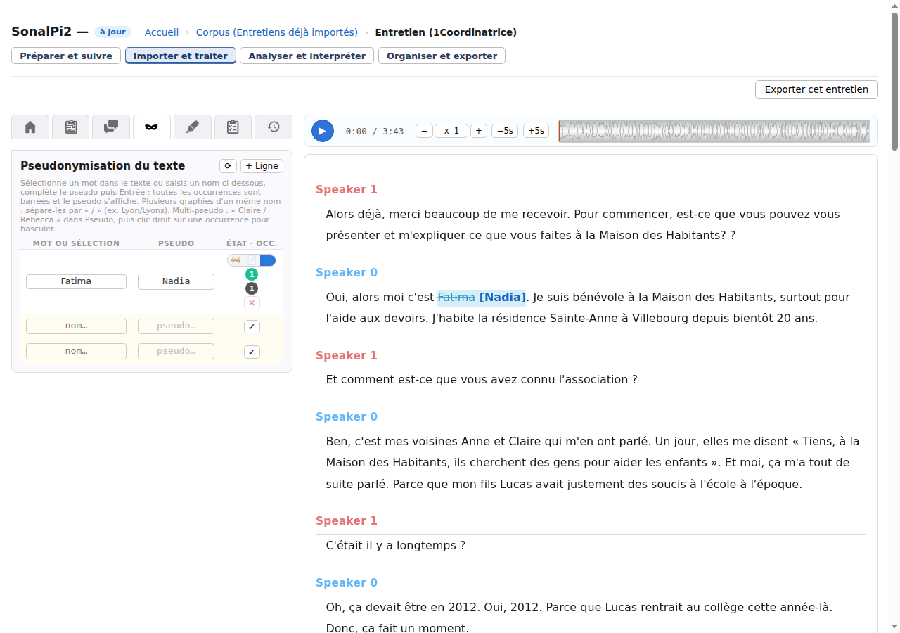
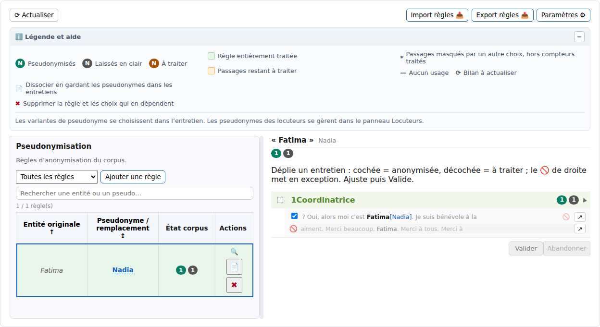

Importer et traiter → Entretien et Corpus
Pseudonymiser et vérifier un entretien
La pseudonymisation permet d’indiquer qu’un nom ou une expression de la transcription doit être remplacé par un pseudonyme dans une sortie préparée pour le partage. SonalPi conserve le texte d’origine : dans l’éditeur, il le barre et affiche le pseudonyme entre crochets.
Pseudonymiser ne garantit pas l’anonymat. Un lieu, une fonction, une date, une note, un commentaire, une variable, le nom d’un fichier ou la voix enregistrée peuvent encore permettre d’identifier une personne. La vérification finale reste indispensable.
Les étapes ci-dessous sont vérifiées dans un corpus local. Pour essayer, ouvrez votre copie de Entretiens déjà importés, puis 1Coordinatrice. Le nom Fatima apparaît deux fois dans sa transcription.
Appliquer un pseudonyme dans un entretien
- Ouvrez l’entretien avec le crayon de sa carte.
- Dans les onglets de gauche, ouvrez Pseudonymisation du texte, représentée par un masque.
- Sélectionnez le nom ou l’expression dans la transcription. SonalPi le reporte dans la colonne Mot ou sélection. Vous pouvez aussi le saisir vous-même.
- Dans Pseudo, saisissez le remplacement souhaité, par exemple Nadia.
- Cliquez sur la coche ✓ de la ligne de saisie. Toutes les occurrences reconnues dans cet entretien sont barrées et suivies de [Nadia].
- Attendez l’état à jour en haut de l’entretien.
La coche applique la décision à l’entretien courant. Elle ne remplace pas les caractères enregistrés dans la transcription et ne change pas les noms des locuteurs.

Choisir entre brouillon, entretien et corpus
Chaque ligne possède trois états, présentés de gauche à droite :
| État | Conséquence | Quand l’utiliser |
|---|---|---|
| 🚧 Brouillon | Le nom et le pseudo sont mémorisés, sans décision appliquée au texte. | Pour préparer une correspondance et la reprendre plus tard. |
| 📄 Entretien | Les occurrences sont décidées seulement dans l’entretien courant. | Pour une correspondance propre à cet entretien. |
| 🌐 Corpus | La correspondance devient une règle partagée et les décisions de cet entretien lui sont reliées. | Pour rechercher et contrôler la même entité dans plusieurs entretiens. |
Si vous quittez une ligne de saisie après avoir renseigné un nom, SonalPi la conserve comme brouillon. Pour partager une ligne déjà appliquée, cliquez sur 🌐.
Créer une règle de corpus ne décide pas automatiquement toutes ses occurrences dans les autres entretiens. La règle sert à les repérer ; vous devez ensuite contrôler ce qui doit être pseudonymisé, laissé en clair ou ignoré.
La touche Entrée peut appliquer directement la portée prioritaire choisie dans les paramètres de pseudonymisation ; Maj+Entrée utilise l’autre portée. Si vous débutez, la coche ✓ puis les trois boutons d’état rendent le choix plus explicite.
Gérer les graphies et les variantes
Plusieurs graphies, un seul pseudonyme
Dans Mot ou sélection, séparez les graphies par une barre oblique, par exemple Fatima / F. Benali. SonalPi les regroupe dans une même ligne et leur applique le même pseudonyme.
Une entité, deux pseudonymes possibles
Dans Pseudo, vous pouvez déclarer au maximum deux variantes, par exemple Nadia / Amina. Les nouvelles occurrences reçoivent d’abord le premier pseudonyme. Pour en changer une seule :
- Faites un clic droit sur l’occurrence barrée dans la transcription.
- Choisissez ↺ Anonymiser plutôt comme « Amina ».
Les compteurs de la ligne sont alors séparés par variante. Les choix se font dans chaque entretien ; le détail du corpus reste en lecture seule lorsqu’une règle possède deux pseudonymes.
Une même ligne accepte soit plusieurs graphies avec un seul pseudonyme, soit une seule entité avec deux pseudonymes. Pour éviter les ambiguïtés, SonalPi refuse de combiner les deux situations.
Laisser une occurrence en clair
Une règle peut convenir presque partout sans devoir masquer chaque emploi. Pour laisser une occurrence précise visible :
- Faites un clic droit sur l’occurrence pseudonymisée.
- Choisissez Laisser en clair (exception).
Le texte n’est plus barré et reçoit un marquage discret. Il reste lié à la règle, mais une sortie pseudonymisée le conserve en clair. Pour revenir sur ce choix, faites un clic droit et choisissez Remettre en anonymisé.
Une exception est une décision volontaire de laisser ce passage visible. Ne l’utilisez pas seulement pour faire disparaître un marquage gênant : relisez son contexte avant le partage.
Vérifier les occurrences dans l’entretien
La dernière colonne de chaque ligne présente le bilan courant :
- le nombre vert correspond aux occurrences pseudonymisées ;
- le nombre gris correspond aux exceptions laissées en clair ;
- À N, en orange, signale des correspondances présentes dans le texte mais encore sans décision.
Cliquez sur un compteur pour rejoindre les passages concernés, puis utilisez ◄ et ► pour les parcourir. La commande ⟳ en tête du panneau recalcule les correspondances, notamment après une correction de la transcription.
Vérifiez les mots voisins, pas seulement le nom isolé. Une même suite de lettres peut désigner une personne dans une phrase et autre chose ailleurs. Les décisions déjà posées, les exceptions et les passages absorbés par une expression plus longue sont distingués.
Contrôler les règles dans le corpus
- Revenez au corpus et ouvrez l’onglet Pseudonymisation.
- Cliquez sur ⟳ Actualiser pour obtenir un bilan récent.
- Repérez la règle. Une ligne verte est entièrement traitée ; une ligne orange contient encore des passages à examiner. Les pastilles indiquent les nombres pseudonymisés, laissés en clair et à traiter.
- Cliquez sur la loupe, puis dépliez un entretien.
- Avec un seul pseudonyme, cochez une occurrence pour la pseudonymiser, décochez-la pour la remettre à traiter, ou utilisez 🚫 pour en faire une exception.
- Cliquez sur Valider. Abandonner revient au dernier bilan enregistré.

Si vous tentez de quitter ce panneau avec des changements en attente, SonalPi propose de les valider, de les abandonner ou de rester. Un entretien verrouillé ou une session en lecture seule reste consultable, mais ses décisions ne sont pas modifiables.
Les règles sans usage sont conservées avec un tiret. Un astérisque signale des occurrences masquées par une décision plus large ; ouvrez l’entretien pour comprendre leur contexte. Les filtres permettent d’afficher seulement les règles à traiter, avec exceptions, entièrement traitées ou inutilisées.
Préparer une sortie pseudonymisée
Dans Exporter cet entretien, choisissez le format puis vérifiez l’option Appliquer la pseudonymisation. Lorsqu’elle est activée, vous pouvez demander le rapport de pseudonymisation avant l’export. Il récapitule les remplacements configurés, les éléments conservés et ceux qui demandent une vérification manuelle.
Dans le fichier produit, une occurrence décidée utilise son pseudonyme ; une exception reste en clair. Exporter ne modifie pas l’entretien source.
Le rapport ne certifie pas l’anonymat. Le pseudonyme du panneau Locuteurs ne masque que le libellé des prises de parole. Les notes, commentaires, données, titres, noms de fichiers et médias doivent être contrôlés séparément, selon le format choisi.